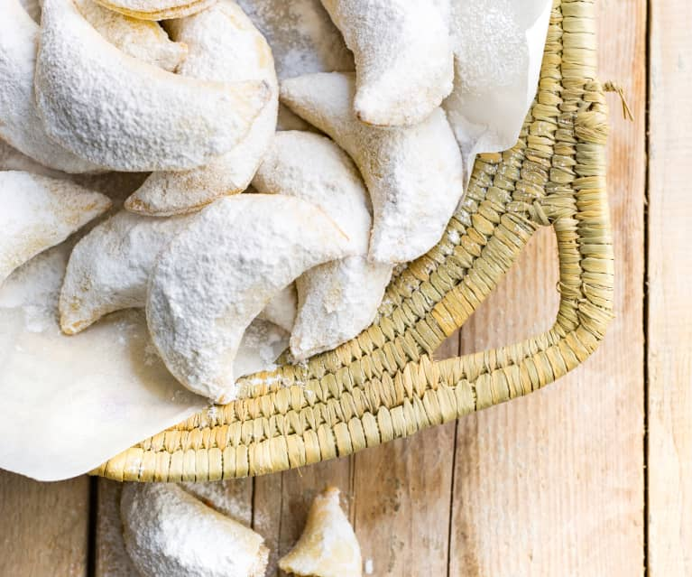
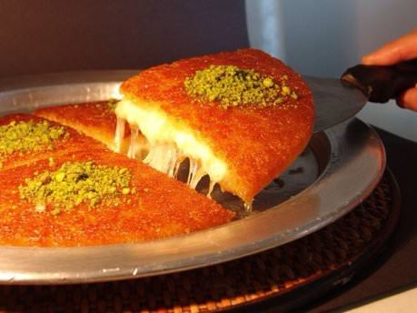

Ürünlerimiz
Cannoli
Cannoli aslında basit bir hamur tatlısı ama hamurunun kıtırlığı ve peynir kremasının yumuşaklığıyla bir tatlıdan beklenen her şeyi veriyor.
45.00₺
Elmalı Strudel
Strudel’in kökeni Avusturya Krallığı’na atfedilir. Tatlının en önemli malzemesini oluşturan yufka, Ortadoğu kökenli olup zamanında Türkiye üzerinden Macaristan’a ve Orta Avrupa’ya yayılmıştır. Baklavada kullanılan hamuru. Macarlar meyveler ile doldurarak değişik bir tatlı elde etmişlerdir.
40.00₺

Donut
Vanilyalı dolgusu ve yumuşacık dokusuyla sizi mest edecek, sevdikleriniz bu lezzete karşı koyamayacak! Ayrıntılı videomuzu ve malzemeleri aşağıya bırakıyoruz, bu tatlıyı keyifle tüketmeniz dileğiyle! Afiyet olsun!
20.00₺

Creme Brulee
Fransız mutfağından dünyaya yayılan creme brulee, az malzemesi ve pratikliği ile çok sevilir.
50.00₺

Cornes de Gazelle
Portakal çiçeği suyu ve tarçın ile kokulu badem ezmesi, bir hilal içine dökülmüş, daha sonra da ancak altın rengi olana kadar pişirilmiş, hassas bir hamur işi ile çevrilidir. Portakal çiçeği suyuna daldırılarak toz haline getirilmiş tozun toz haline getirilmesi isteğe bağlıdır - bu durumda hamurlar, Kaab el Ghazal M'fenned olarak adlandırılır.
35.00₺
Browni
Brownie ya da bizim genel olarak yazdığımız adıyla browni. İçerisinde az un olması sebebiyle kıvamı bildiğimiz keklerden ve tatlılardan çok daha farklı. Çikolata tadının buram buram hissedildiği bu enfes tarifin kıvamı hafif nemli olur. Yerken ağızda kuru bir tat bırakmaz. Browni yapılırken düşülen en büyük hataların başında harca çok fazla un koymak ve uzun süre pişirmek geliyor.
25.00₺

Künefe
Tel tel açıldıktan sonra bolca tereyağıyla harmanlanan tel kadayıflar, özel künefe peyniri olarak da bilinen tuzsuz Antakya peyniri, ateşle temasında çıtır çıtır kızaran kadayıf telleri... Tarifinde yer alan bunca güzellik sizce hangi tatlıda var? Tabii ki şerbetli tatlıların en nefislerinden olan künefede!
35.00₺
Çikolatalı Mus
Yüzde 70 oranında kakao içeriği ile damaklarda kalıcı bir tat bırakan bitter çikolatayla hazırlanan mousse (mus) tarifi, pratik olarak hazırlayabileceğiniz bir tatlı.Köpük kıvamını alan ve kısa sürede hazırlanan çikolatalı mus, tatlı krizlerini bitireceğe benziyor.
30.00₺
Kruvasan
En güzel ve yararlı Fransız icadı, kat kat kabaran çıtır hamuru ile göz dolduran, mideleri mest eden kruvasan yapımı biraz incelik ve özveri gerektiriyor.
20.00₺